Sommaire du chapitre
Enseignement scientifique · Terminale · Thème 2 — Le futur des énergies
Deux siècles d'énergie électrique
Thème 2 · Chapitre 1 — cours & exercices
L'énergie électrique accompagne chaque seconde de notre vie. Si nous devions nous en passer, cela nous ramènerait à la fin du XIXe siècle : éclairage au gaz ou à la bougie, chevaux, vélo ou train à vapeur pour se déplacer, et bien sûr ni ordinateur, ni téléphone, ni radio, ni télévision…
L'électricité est produite à partir de nombreuses sources d'énergie différentes : combustible fossile, centrale hydroélectrique, centrale nucléaire, énergie solaire… Mais dans 95 % des cas, cette production fait intervenir un alternateur. L'unique moyen de production d'énergie électrique qui ne soit pas anecdotique et qui ne fasse pas intervenir un alternateur est l'utilisation de panneaux photovoltaïques.
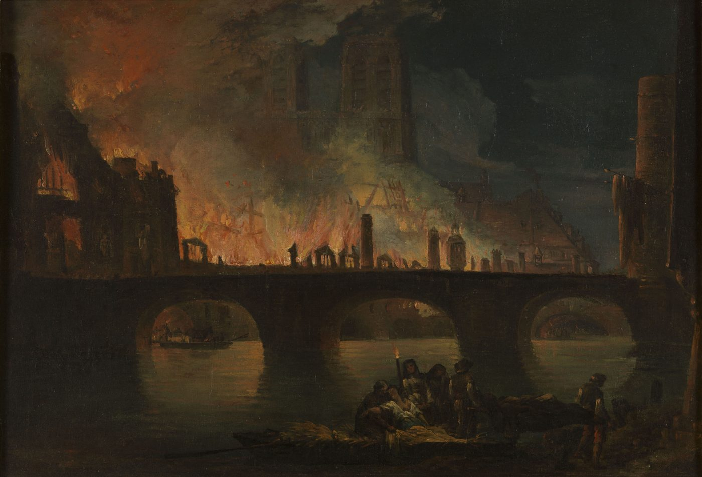
01 L'alternateur
L'alternateur est à l'origine de plus de 95 % de l'électricité produite dans le monde. De fait, il s'agit donc d'un dispositif sur lequel repose entièrement nos sociétés industrialisées.
A — Un peu d'histoire
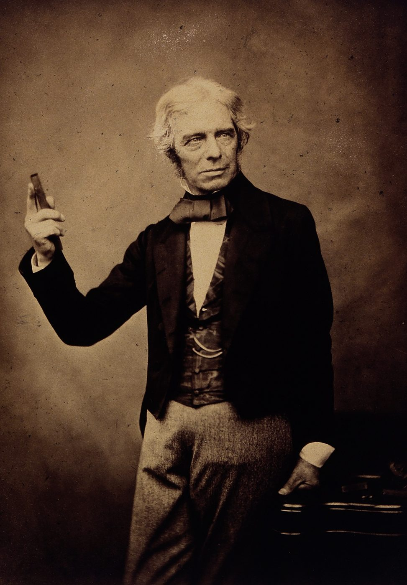
Michael Faraday (1791-1867)
Le savant anglais Michael Faraday découvre l'induction électromagnétique en 1831. Ce phénomène est le suivant : lorsqu'un conducteur se déplace dans un champ magnétique, il peut apparaître une tension à ses bornes (ou un courant s'il s'agit d'un circuit fermé).
Ce phénomène dépend de l'orientation du champ magnétique et du conducteur. C'est ce que l'on exploite dans les alternateurs.
🎬 L'expérience de Faraday — en travaux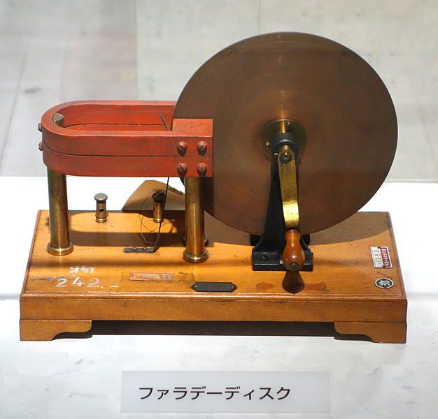
B — Principe de fonctionnement de l'alternateur
Un alternateur génère du courant par induction électromagnétique. Le principe est toujours le même : une partie mobile, le rotor, tourne dans une partie fixe, le stator. Le rotor peut être un aimant permanent ou un électroaimant. Le stator est constitué d'un enroulement de fil de cuivre (appelé bobine). Ce dispositif produit un courant alternatif.
L'origine de l'énergie mécanique est très variable. Le rotor peut être mis en mouvement par une turbine entraînée par de la vapeur d'eau (centrale au charbon, au gaz, au pétrole, centrale nucléaire) ou de l'eau liquide (centrale hydroélectrique). Le rotor peut également être mis en mouvement par le vent (cas de l'hélice d'une éolienne) ou par un moteur (voiture, groupe électrogène).
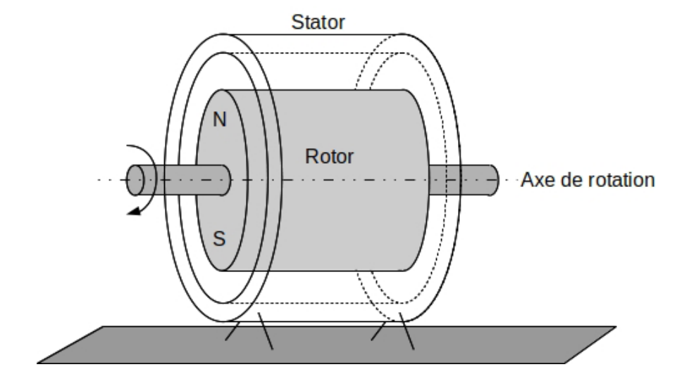
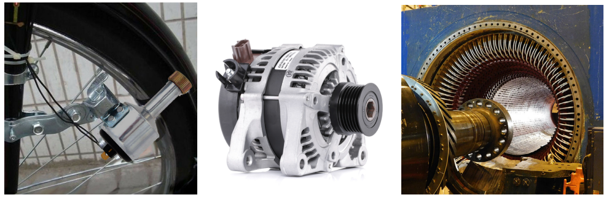
C — Le rendement d'un alternateur
Le rendement d'un convertisseur tel que l'alternateur est une propriété déterminante. Dans un système de type électromécanique, les sources de dissipation d'énergie sont de plusieurs natures : pertes mécaniques (frottements), pertes par effet Joule dans les circuits électriques et pertes dites « fer ». Ces pertes sont comparables entre elles dans les systèmes réels. Dans tous les cas, l'énergie est dissipée (notée Ediss) sous forme de chaleur. Si cette chaleur est trop élevée et mal évacuée, le système va s'échauffer au risque de se détériorer.
On définit le rendement η d'un alternateur comme le rapport de l'énergie utile qu'il fournit sur une certaine durée, sous forme électrique donc (notée Eélec), à l'énergie mécanique qu'il reçoit sur cette même durée (notée Eméca).
P puissance · W
η rendement · sans unité (souvent en %, en multipliant par 100)
L'énergie mécanique non transformée en énergie électrique est dite « dissipée » (notée Ediss). Ainsi :
Eméca = Eélec + Ediss
Le rendement est nécessairement compris entre 0 et 1 :
0 ≤ η ≤ 1 soit 0 % ≤ η ≤ 100 %
Pour les systèmes industriels haute performance, les rendements dépassent 0,99 (soit 99 %). Pour un alternateur de 100 MW, un rendement de 99 % signifie tout de même qu'il est nécessaire d'évacuer une puissance thermique de 1 MW, soit l'équivalent d'un millier de radiateurs électriques de 1 kW.
Un alternateur reçoit Eméca = 5 kJ et fournit Eélec = 4 500 J.
Compléter la chaîne énergétique (Ediss = ?) et calculer le rendement de cet alternateur.
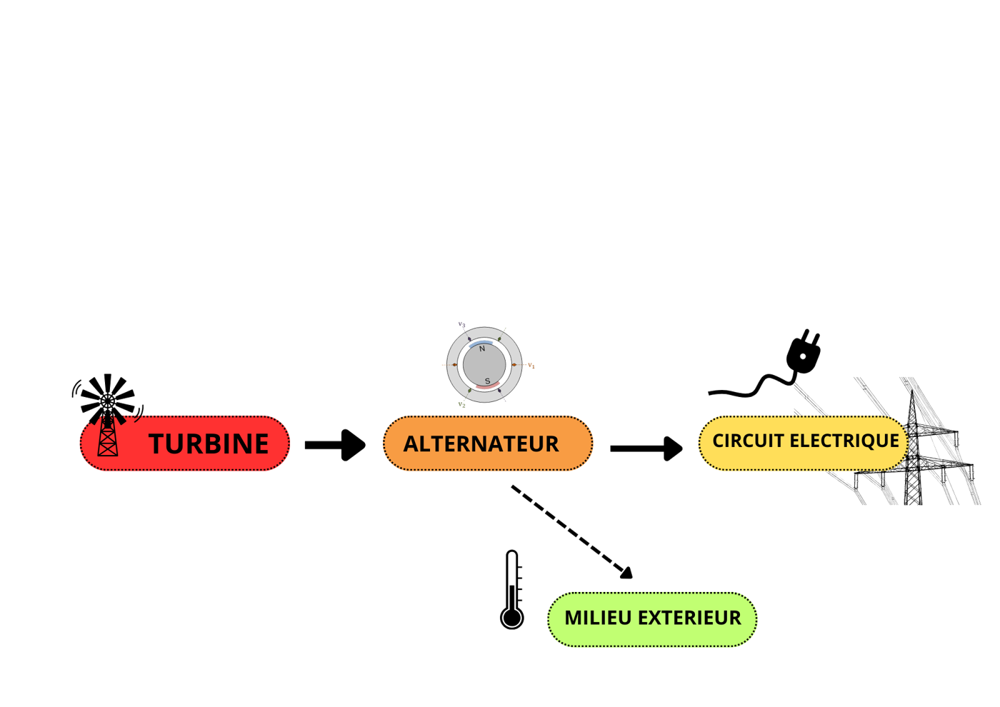
Voir la correction
Eméca = 5 kJ = 5 000 J ; Eélec = 4 500 J.
Eméca = Eélec + Ediss · η = Eélec / Eméca
Ediss = Eméca − Eélec
Ediss = 5 000 − 4 500 = 500 J · η = 4 500 / 5 000 = 0,90 soit 90 %
90 % de l'énergie mécanique reçue ressort sous forme électrique ; le reste est dissipé en chaleur vers le milieu extérieur.
Voici les caractéristiques d'un groupe électrogène trouvées sur Internet.
1. L'« ampérage » (autre nom de l'intensité du courant électrique) annoncé est-il compatible avec la puissance électrique maximale annoncée ?
2. Quel est le rendement de l'alternateur de ce groupe électrogène ?
On se sert de ce groupe pour alimenter un appareil électrique consommant une puissance de 1,5 kW pendant 2 h.
3. Quel est le volume d'essence consommé ?
4. En Serbie, le prix du kWh d'électricité acheté auprès d'EPS est d'environ 7 RSD. Le prix d'un litre d'essence est d'environ 160 RSD. Est-il plus économique de produire son électricité avec un groupe électrogène ou bien en l'achetant auprès d'EPS ? Quel est l'intérêt d'un groupe électrogène ?
Données : densité de l'essence = 0,75
02 Les panneaux photovoltaïques
A — Les semi-conducteurs
Les panneaux photovoltaïques, ou panneaux solaires, qui transforment une partie de l'énergie lumineuse reçue en énergie électrique, sont essentiellement constitués de silicium. Le silicium est un semi-conducteur.
Un semi-conducteur est un matériau dont la conductivité électrique est intermédiaire entre celle des métaux et celle des isolants.
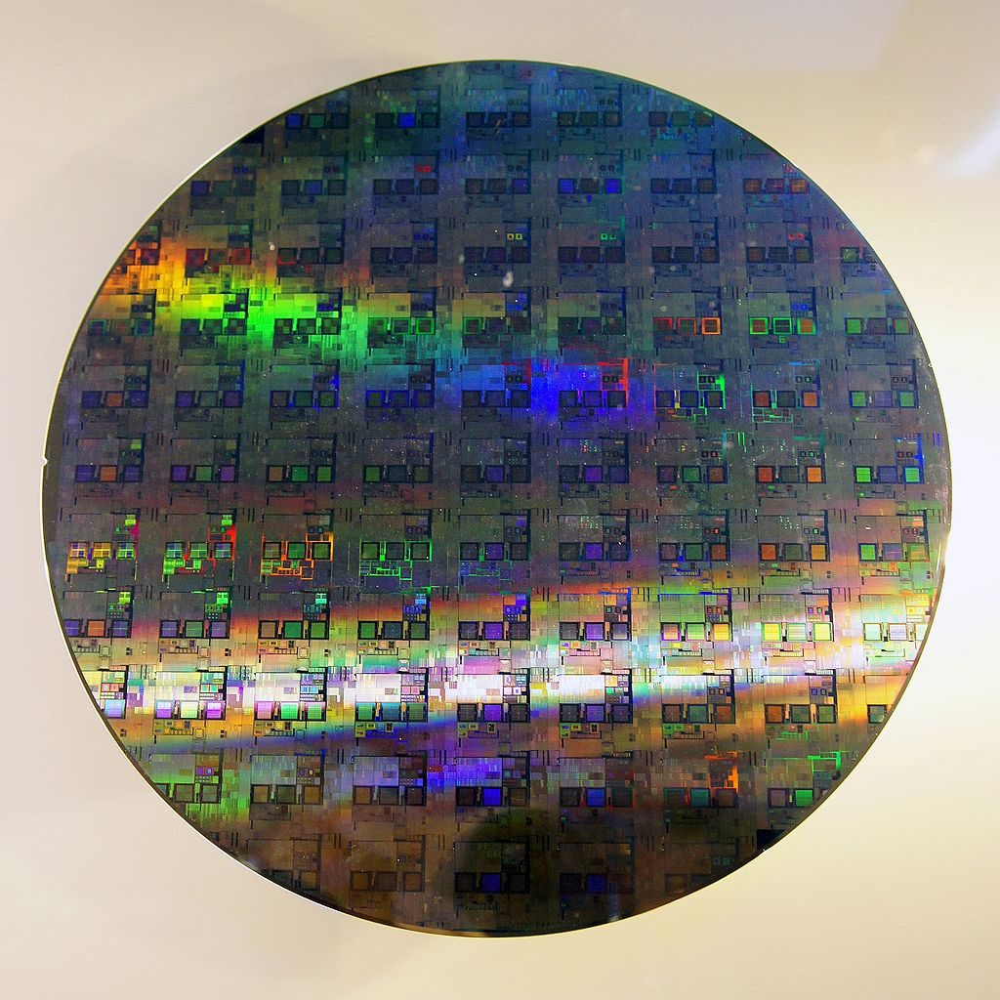
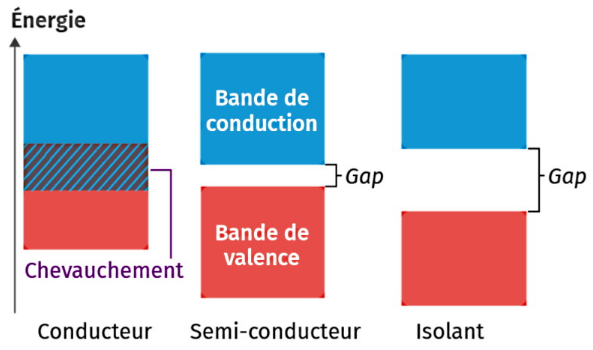
Selon la théorie des bandes :
- Un matériau conducteur est constitué d'atomes dont les électrons périphériques peuvent passer librement de la bande de valence vers la bande de conduction car celles-ci se chevauchent. Ces matériaux conduisent donc le courant grâce à leurs électrons se trouvant dans la bande de conduction.
- Dans un matériau isolant, la différence d'énergie entre ces deux bandes (appelée gap) est trop importante : il est très difficile pour des électrons d'acquérir assez d'énergie pour passer dans la bande de conduction. Par conséquent, ces matériaux ne conduisent pas le courant.
- Dans un matériau semi-conducteur, le gap est suffisamment faible pour qu'un apport d'énergie modeste, par des photons dans le domaine du visible ou de l'infrarouge par exemple, permette le passage des électrons de la bande de valence vers la bande de conduction. Le matériau passe ainsi d'un état isolant vers un état conducteur.
B — Le fonctionnement des panneaux photovoltaïques
Une cellule photovoltaïque simple est constituée d'une jonction dite P/N, c'est-à-dire deux feuillets de silicium qui ont des propriétés physiques légèrement modifiées (on parle de dopage) :
- la zone dopée P contient une accumulation de charges négatives ;
- la zone dopée N contient une accumulation de charges positives.
Lorsque les électrons des semi-conducteurs reçoivent de l'énergie de la part des photons émis par le Soleil, ceux-ci se mettent à circuler de la zone dopée N à la zone dopée P. C'est ainsi que l'on produit de l'énergie électrique à partir d'un rayonnement.
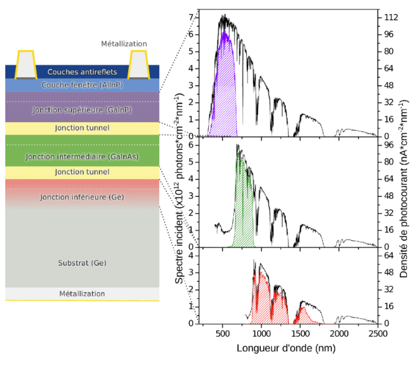
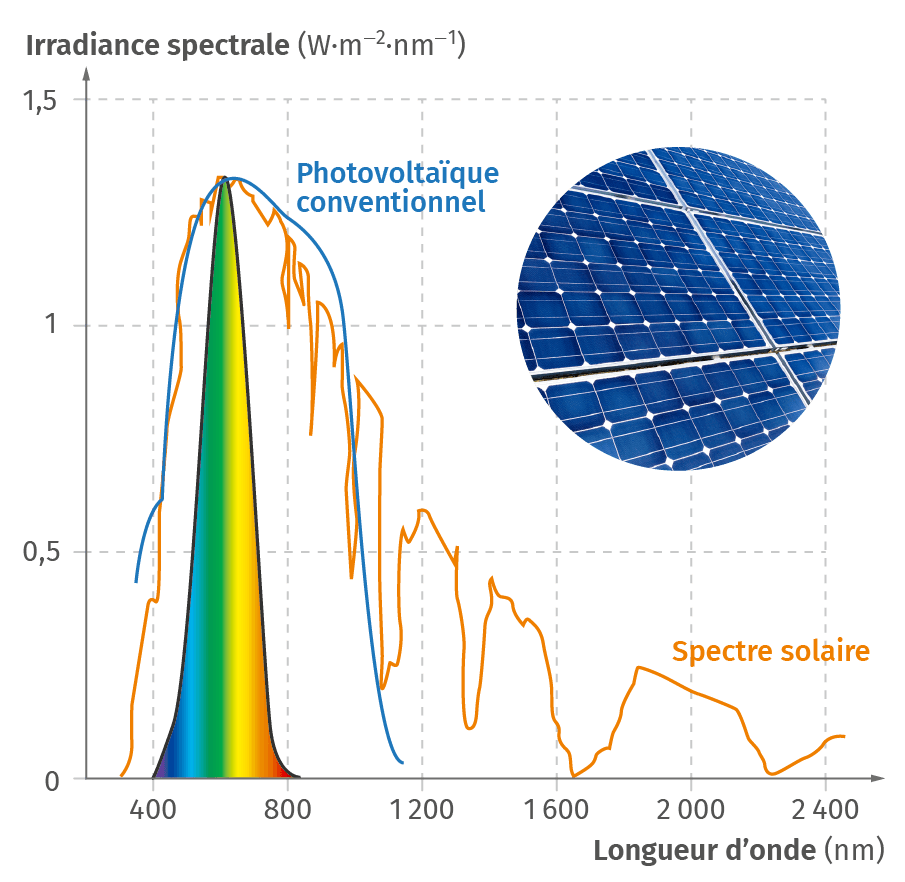
Le spectre d'absorption d'une cellule photovoltaïque, c'est-à-dire l'ensemble des radiations pouvant fournir suffisamment d'énergie aux électrons des semi-conducteurs utilisés, doit couvrir au mieux le spectre d'émission du Soleil afin de maximiser le rendement.
L'énergie du gap et celle des photons qui permet de franchir cette barrière d'énergie s'expriment en électron-volt.
Lorsqu'un semi-conducteur absorbe un photon d'énergie supérieure à celle de son gap, l'énergie excédentaire est transformée en chaleur. Si un panneau solaire à base de silicium (gap de 1,1 eV) absorbe un photon d'énergie 3 eV, seul 1,1 eV est converti en énergie électrique. Le reste (3 − 1,1 = 1,9 eV) est perdu sous forme de chaleur. Les photons dont l'énergie est inférieure au gap ne sont pas absorbés et donc pas convertis en énergie électrique.
Cela explique le faible rendement des panneaux solaires au silicium (< 20 %).
Quel est le semi-conducteur le plus adapté pour transformer l'énergie radiative du spectre visible en énergie électrique ?
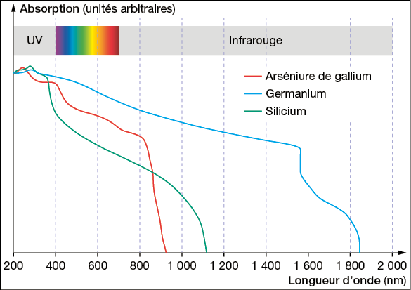
Voir la correction
Le spectre visible s'étend d'environ 400 nm à 800 nm. On lit sur le graphique la plage d'absorption de chaque semi-conducteur.
Le semi-conducteur le plus adapté est celui dont le spectre d'absorption couvre au mieux le domaine visible.
C — Rendement des panneaux photovoltaïques
De très nombreuses pistes font actuellement l'objet de recherches :
- Les panneaux à cellules multi-jonctions : ils sont constitués de différentes couches de semi-conducteurs, chacune particulièrement efficace dans un domaine précis du spectre du Soleil. Ces panneaux coûtent beaucoup plus cher que les panneaux « classiques » car leur fabrication est complexe. Ils ont cependant des rendements plus élevés, de l'ordre de 30 %. Ils sont utilisés dans le spatial.
- Les panneaux à cellules organiques : le matériau semi-conducteur est fabriqué avec des molécules organiques. Ils ne nécessitent pas de ressources rares et ne coûtent pas cher à fabriquer, mais leur rendement est faible (de l'ordre de 5 − 12 %) et les cellules se dégradent assez vite au contact de l'humidité et de l'oxygène de l'air.
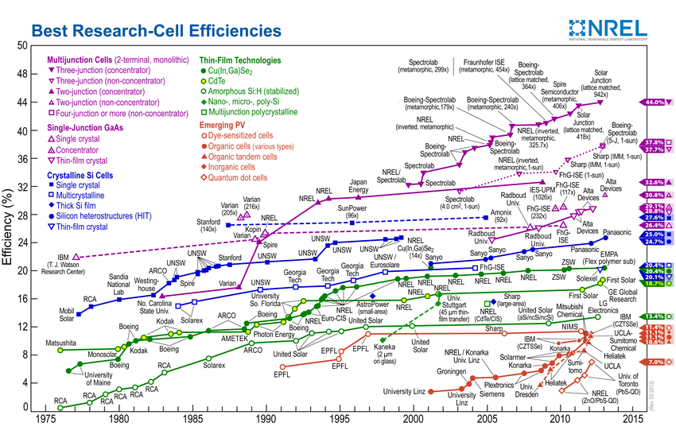
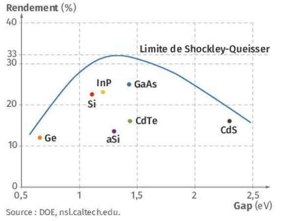
✓ Pour le DS, je sais :
M. Van HoordeLycée général Isaac de l'Étoile · Poitiers